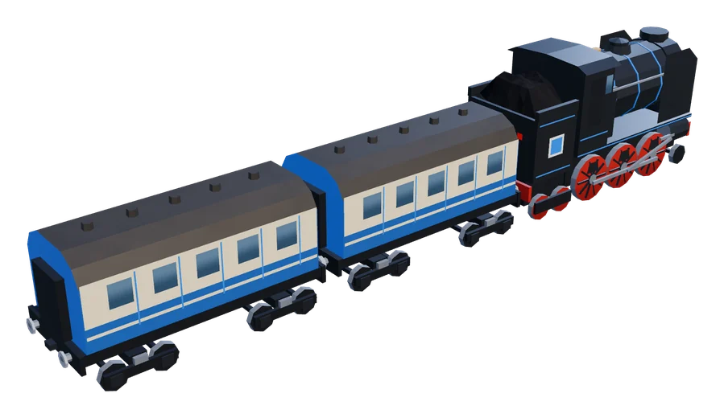
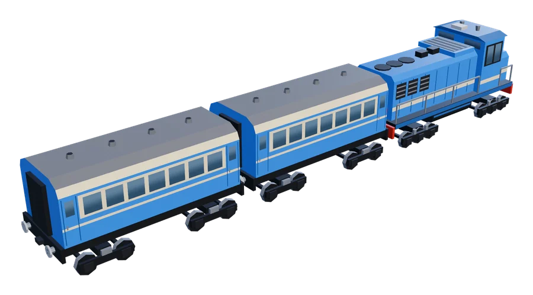
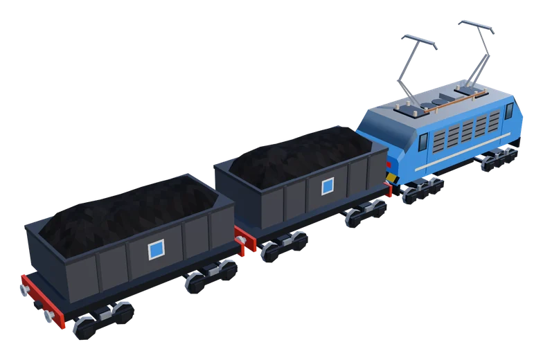

Trens
Totes les locomotores.
Una locomotora arrossega vagons de qualsevol càrrega que pugui portar. El preu és només el de la locomotora.
 Kestrel Steam1950 · 99 km/h
Kestrel Steam1950 · 99 km/h Brigand Tank Engine1950 · 81 km/h
Brigand Tank Engine1950 · 81 km/h
Highland Mogul1954 · 108 km/h Meridian Diesel1960 · 147 km/h
Meridian Diesel1960 · 147 km/h Sparrow Railcar1966 · 168 km/h
Sparrow Railcar1966 · 168 km/h Vanguard Express1975 · 204 km/h
Vanguard Express1975 · 204 km/h
Ironclad Freight Diesel1979 · 162 km/h Aurora Electric1985 · 245 km/h
Aurora Electric1985 · 245 km/h Swift High-Speed1995 · 315 km/h
Swift High-Speed1995 · 315 km/h Swallow Tilting Express2003 · 264 km/h
Swallow Tilting Express2003 · 264 km/h Zephyr Hydrogen2022 · 240 km/h
Zephyr Hydrogen2022 · 240 km/h
Tempest Electric Freight2024 · 222 km/h
| Model | Des de | Porta | Capacitat | Velocitat | Preu | Funcionament, l'any |
|---|---|---|---|---|---|---|
| Kestrel Steam | 1950 | Qualsevol cosa | fins a 6 vagons | 99 km/h | 38.000 $ | 5.200 $ |
| Brigand Tank Engine | 1950 | Qualsevol cosa | fins a 4 vagons | 81 km/h | 24.000 $ | 3.200 $ |
| Highland Mogul | 1954 | Qualsevol cosa | fins a 9 vagons | 108 km/h | 52.000 $ | 6.400 $ |
| Meridian Diesel | 1960 | Qualsevol cosa | fins a 8 vagons | 147 km/h | 74.000 $ | 8.400 $ |
| Sparrow Railcar | 1966 | Passatgers, Correu, Diaris | fins a 2 vagons | 168 km/h | 46.000 $ | 3.600 $ |
| Vanguard Express | 1975 | Qualsevol cosa | fins a 10 vagons | 204 km/h | 125.000 $ | 11.000 $ |
| Ironclad Freight Diesel | 1979 | Qualsevol cosa | fins a 12 vagons | 162 km/h | 98.000 $ | 9.800 $ |
| Aurora Electric | 1985 | Qualsevol cosa | fins a 12 vagons | 245 km/h | 165.000 $ | 9.000 $ |
| Swift High-Speed | 1995 | Passatgers, Correu | fins a 10 vagons | 315 km/h | 245.000 $ | 14.000 $ |
| Swallow Tilting Express | 2003 | Passatgers, Correu | fins a 8 vagons | 264 km/h | 180.000 $ | 11.000 $ |
| Zephyr Hydrogen | 2022 | Qualsevol cosa | fins a 10 vagons | 240 km/h | 190.000 $ | 6.200 $ |
| Tempest Electric Freight | 2024 | Qualsevol cosa | fins a 14 vagons | 222 km/h | 210.000 $ | 7.000 $ |
- Cada vagó porta 40 passatgers, 40 diaris, 20 electrònica, 10 cotxes, o 30 unitats de qualsevol altra cosa, i suma 6.500 $ al preu i 450 $ l'any.
- Les locomotores de vapor perden un 3% de velocitat per cada vagó que arrosseguen.
- Els models elèctrics necessiten catenària: Aurora Electric, Swift High-Speed, Tempest Electric Freight.
- Qualsevol càrrega és tota càrrega tret de passatgers, cotxes. Qualsevol càrrega a granel tampoc inclou correu, diaris.
- La vida útil d'aquest tipus és de 25 anys: consulta Envelliment i renovació.